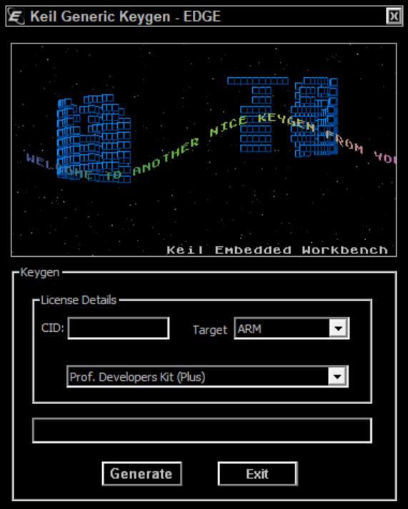

keil和STM32的部署
本文最后更新于 2024年9月18日 晚上
keil的部署
软件下载
百度网盘
链接：https://pan.baidu.com/s/18IuTqzBIFJONlUo6LtuCWw?pwd=9e6n 提取码：9e6n
使用说明
先安装keil本体，基本上选个安装路径，一路下一步就行。
使用管理员模式打开keil，点击file->license Management,看到如下界面（这是已经激活成功的）
打开Keygen.exe,将CID填入，将target设置为ARM,点击Generate，获得License Code。

回到keil的License Management界面，把License Code 填入，点击Add License，Product下面有MDK-ARM Plus为激活成功。
STM32CubeMX的部署
Java环境安装
1.安装jdk 由于STM32CubeMX是Java实现的，需要安装jdk环境。 jdk官网下载链接： https://www.oracle.com/java/technologies/javase-downloads.html
软件下载
理论上来说STM32CubeMX为免费软件，但是官网下载是要求注册的，我这里给出我的镜像地址，官网可以直接在网上下载，请自行选择。
百度网盘
V6.0.0
链接：https://pan.baidu.com/s/1vChvLd9r6J1ioNnKridX5g?pwd=dqsu 提取码：dqsu
部分电脑无法兼容旧版，给出新版下载资源，但是新版部分配置和算法有BUG，旧版更稳定些。
百度网盘
V6.9.0
链接：https://pan.baidu.com/s/1oLdQGMQ3ISI066AuKFmDBg?pwd=w27z 提取码：w27z